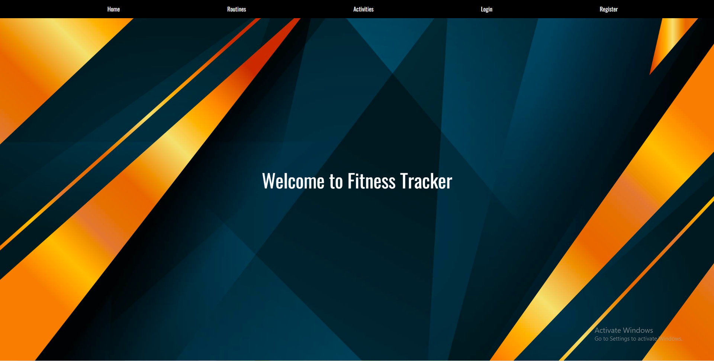
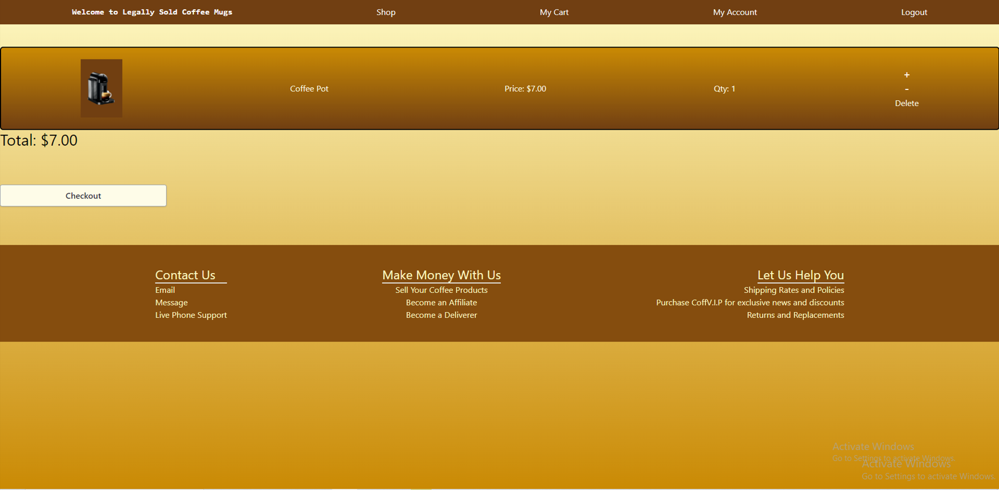

Fitness Tracker
A website that allows you to post and see people's workout routine's and activities. I mainly helped with sorting out the routes and postgreSQL functions for the program, along with working on the CSS for the routines and activities pages. I think this was the first project where I really learned to work with another person in a remote workflow, so that's why even though it looks a bit shabby I'm proud of it. It was also the first project where I really learned to develop a proper backend.
Coffee Bandit
An online marketplace where you can buy homemade coffee products. I'm proud of this project for the practical UI/UX design and the use of Prisma to sort out the cart and checkout functions. This is where I learned to use frameworks like Tailwind as well for a more practical user interface.
